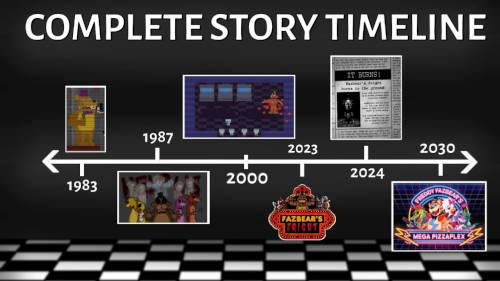

Como surgiu o jogo?
Five nights at freddy's, desenvolvido por Scott Cawthon foi fruto de várias críticas feitas ao jogo anterior de seu autor: Chipper & Sons lumber co
Elas se baseavam no argumento de que os personagens do jogo se pareciam com animatrônicos. Foi dessa crítica, que Scott teve a ideia de criar: Five Nights At Freddys's

O fenômeno
Talvez para surpresa de alguns, FNAF se popularizou muito rápido devido a canais no YouTube. No Brasil, um dos primeiros youtubers a popularizar o jogo e suas teorias foi HueStation
O interesse de muitos pelo jogo veio principalmente de sua história intrigante e misteriosa a qual não foi 100% revelada até hoje
